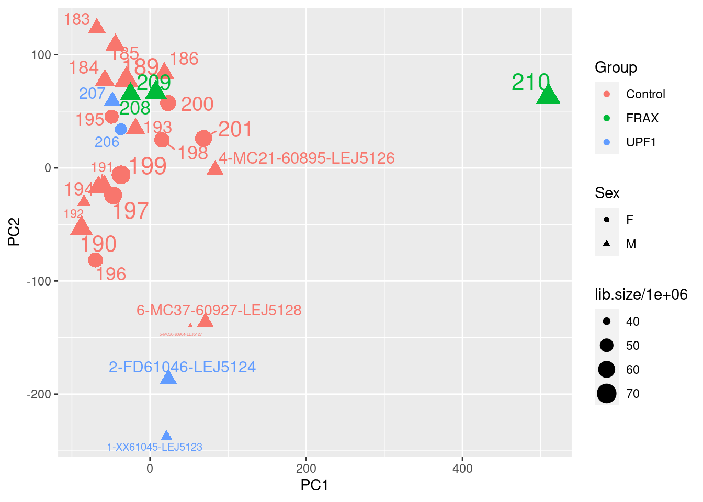
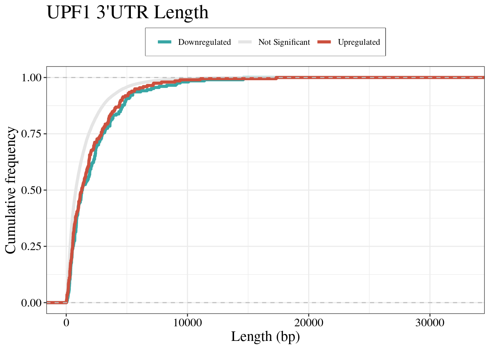
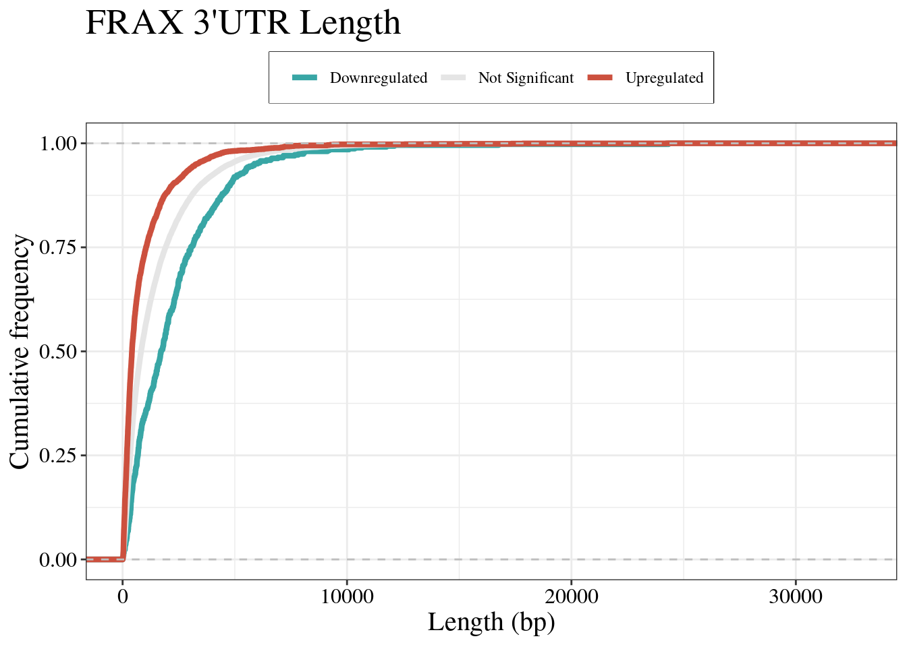
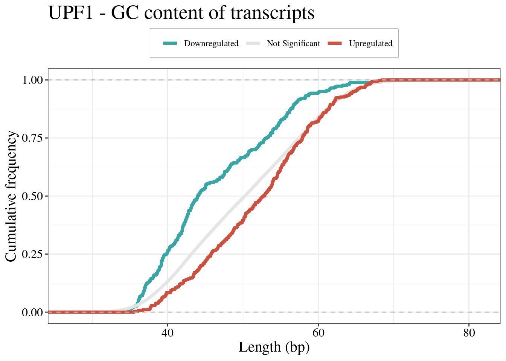

transcript-analysis
urwahnawaz
2024-01-23
Last updated: 2024-01-24
Checks: 7 0
Knit directory: UPF1-FMR1/
This reproducible R Markdown analysis was created with workflowr (version 1.7.1). The Checks tab describes the reproducibility checks that were applied when the results were created. The Past versions tab lists the development history.
Great! Since the R Markdown file has been committed to the Git repository, you know the exact version of the code that produced these results.
Great job! The global environment was empty. Objects defined in the global environment can affect the analysis in your R Markdown file in unknown ways. For reproduciblity it’s best to always run the code in an empty environment.
The command set.seed(20230923) was run prior to running
the code in the R Markdown file. Setting a seed ensures that any results
that rely on randomness, e.g. subsampling or permutations, are
reproducible.
Great job! Recording the operating system, R version, and package versions is critical for reproducibility.
Nice! There were no cached chunks for this analysis, so you can be confident that you successfully produced the results during this run.
Great job! Using relative paths to the files within your workflowr project makes it easier to run your code on other machines.
Great! You are using Git for version control. Tracking code development and connecting the code version to the results is critical for reproducibility.
The results in this page were generated with repository version 85d9b5a. See the Past versions tab to see a history of the changes made to the R Markdown and HTML files.
Note that you need to be careful to ensure that all relevant files for
the analysis have been committed to Git prior to generating the results
(you can use wflow_publish or
wflow_git_commit). workflowr only checks the R Markdown
file, but you know if there are other scripts or data files that it
depends on. Below is the status of the Git repository when the results
were generated:
Ignored files:
Ignored: .Rproj.user/
Ignored: analysis/Exploratory-DEG.nb.html
Ignored: analysis/Quality-control.nb.html
Untracked files:
Untracked: data/data-stability-no-FMR1.csv
Untracked: data/data-stability.csv
Untracked: output/DEG-results.Rda
Unstaged changes:
Modified: analysis/DEG-analysis.Rmd
Modified: analysis/_site.yml
Note that any generated files, e.g. HTML, png, CSS, etc., are not included in this status report because it is ok for generated content to have uncommitted changes.
These are the previous versions of the repository in which changes were
made to the R Markdown (analysis/transcript-analysis.Rmd)
and HTML (docs/transcript-analysis.html) files. If you’ve
configured a remote Git repository (see ?wflow_git_remote),
click on the hyperlinks in the table below to view the files as they
were in that past version.
| File | Version | Author | Date | Message |
|---|---|---|---|---|
| Rmd | 85d9b5a | urwahnawaz | 2024-01-24 | wflow_publish(c("analysis/transcript-analysis.Rmd", "analysis/index.Rmd")) |
Introduction
source("code/libraries.R")
library(coin)
library(gplots)
library(stargazer)
library(janitor)
library(ggside)
library(ggstatsplot)
library(EnsDb.Hsapiens.v86)
library(fishpond)
library(tximeta)
library(GeneOverlap)
library(ggside)
library(tidyquant)
library(stargazer)
library(ggfortify)
library(glue)
library(cowplot)
library(broom)
library(glmpca)
library(naniar)
library(bigPint)
library(ggrepel)txdf = transcripts(EnsDb.Hsapiens.v86, return.type="DataFrame")
tx2gene = as.data.frame(txdf[,c("tx_id","gene_id", "tx_biotype")])
ah <- AnnotationHub() %>%
subset(species == "Homo sapiens") %>%
subset(rdataclass == "EnsDb") %>%
subset(genome == "GRCh38")
ensDb <- ah[["AH109606"]]
grTrans <- transcripts(ensDb)
trLengths <- exonsBy(ensDb, "tx") %>%
width() %>%
vapply(sum, integer(1))
mcols(grTrans)$length <- trLengths[names(grTrans)]
genesGR = genes(ensDb)
transGR = transcripts(ensDb)NMD_features = read.table("/home/neuro/Documents/NMD_analysis/Analysis/databases/nif_finder/Output/Homo_sapiens.GRCh38.105/Homo_sapiens.GRCh38.105__nifs.tsv", sep = "\t", skip =1)
colnames(NMD_features) = c("tx_id", "NIF_dEJ", "NIF_uORF", "NIF_long_3utr", "NIF|__|GC(cds[-10:termination_codon])", "GC_5utr", "GC_cds", "GC_3utr", "GC_exons", "GC_introns", "LENGTH_5utr", "LENGTH_cds", "LENGTH_3utr", "LENGTH_exons", "LENGTH_introns", "EXONS_count", "dEJs|__|penultimate-exon>=55(nts)", "uORFs|__|count", "uORFs|__|gc-content", "uORFs|__|lengths", "uORFs|__|max-length")
NMD_features$NIF_dEJ = ifelse(NMD_features$NIF_dEJ == "True",gsub("True", 1, NMD_features$NIF_dEJ), 0)
NMD_features$NIF_uORF = ifelse(NMD_features$NIF_uORF == "True",gsub("True", 1, NMD_features$NIF_uORF), 0)
NMD_features$NIF_long_3utr = ifelse(NMD_features$NIF_long_3utr == "True",gsub("True", 1, NMD_features$NIF_long_3utr), 0)
NMD_features %<>% mutate_at(.vars = "tx_id", .funs = gsub, pattern = "\\.[0-9]*$", replacement = "")
NMD_features$NIF_dEJ[is.na(NMD_features$NIF_dEJ)] <- 0
NMD_features$NIF_uORF[is.na(NMD_features$NIF_uORF)] <- 0
NMD_features$NIF_long_3utr[is.na(NMD_features$NIF_long_3utr)] <- 0nif_ma_plot = function(data){
DEColours <- c("NIF-" = "#14213d","NIF+" = "#ff6700", "Not Sig" = "#e6e8e6")
temp = data %>%
mutate(nif_label = ifelse(nif_feature != "None" & FDR < 0.05, "NIF+",
ifelse(nif_feature == "None" & FDR < 0.05, "NIF-", "Not Sig")))
plot = temp %>%
ggplot(aes(y= logFC,
x = logCPM,
colour = as.factor(as.character(nif_label)),
size= nif_label)) +
geom_point(alpha = 0.5) +
scale_colour_manual(values = DEColours) + theme_bw()+
theme(legend.position = "top",
axis.title.y = element_text(size = 12)) + geom_hline(yintercept = 0,
linetype = "dashed", color = "grey") +
geom_ysidedensity(aes(x=after_stat(density),
color = nif_label, fill = nif_label), alpha=0.2, size = 1) +
scale_fill_manual(values = DEColours) + scale_size_manual(values = c("NIF+" = 3,
"NIF-" =2,
"Not Sig"= 2)) +
theme(ggside.panel.scale.y = 0.2,
axis.text.x = element_text(size = 12, family = "serif", color = "black", angle = 90),
axis.text.y = element_text(size = 12, family = "serif", color = "black"),
axis.title = element_text(size=15, family = "serif"),
legend.box.background = element_rect(color = "black"),
legend.text = element_text(family = "serif"),
legend.title = element_text( family = "serif"),
plot.title = element_text(family = "serif", size =20),
panel.grid.major.x = element_blank(),
panel.grid.major.y = element_line( size=.1 ),
legend.position = "top",
strip.text.x = element_text(
size = 12, face = "bold.italic", family = "serif"
)) + labs(color = "Presence of NMD inducible feature",
fill = "",
size = "") + scale_alpha(guide = 'none')
return(plot)
}salmon.files = ("/home/neuro/Documents/NMD_analysis/Analysis/Results/UPF1-FMR1/Salmon")
salmon = list.files(salmon.files, pattern = "transcripts$", full.names = TRUE)
salmon = list.files(salmon.files, pattern = "transcripts$", full.names = TRUE)
all_files = file.path(salmon, "quant.sf")
sample_names = gsub("/home/neuro/Documents/NMD_analysis/Analysis/Results/UPF1-FMR1/Salmon/", "", salmon)
sample_names = gsub(".gz_transcripts", "", sample_names)
sample_names = gsub("\\_.*", "", sample_names)
names(all_files) <- sample_names
names(salmon) <- sample_names
md = read.csv(here::here("data/Sample_info.csv"), header= TRUE) %>%
#mutate(files = file.path(salmon, "quant.sf")) %>%
dplyr::rename("names" = "GeneWiz.ID",
"Group" = "Sample.type") %>%
mutate(Group = ifelse(Group == "MC" | Group == "FC", "Control", Group)) %>%
dplyr::select(names,everything()) %>%
mutate(names = gsub("\\_.*", "", names) )
md = md[order(match(md$names, sample_names)),]
md %<>%
rownames_to_column("random") %>%
# column_to_rownames("names") %>%
dplyr::select(-random) %>%
mutate(files = all_files)
md %<>% dplyr::filter(Group != "FMR1") %>%
dplyr::filter(names != "23-LDJ6767") %>%
dplyr::filter(names != "202")
all_files = all_files[names(all_files) %in% md$names]
salmon = salmon[names(salmon) %in% md$names]catch <- catchSalmon(salmon)Reading /home/neuro/Documents/NMD_analysis/Analysis/Results/UPF1-FMR1/Salmon/1-XX61045-LEJ5123_L2.gz_transcripts, 187432 transcripts, 50 bootstrap samples
Reading /home/neuro/Documents/NMD_analysis/Analysis/Results/UPF1-FMR1/Salmon/183_L3.gz_transcripts, 187432 transcripts, 50 bootstrap samples
Reading /home/neuro/Documents/NMD_analysis/Analysis/Results/UPF1-FMR1/Salmon/184_L3.gz_transcripts, 187432 transcripts, 50 bootstrap samples
Reading /home/neuro/Documents/NMD_analysis/Analysis/Results/UPF1-FMR1/Salmon/185_L3.gz_transcripts, 187432 transcripts, 50 bootstrap samples
Reading /home/neuro/Documents/NMD_analysis/Analysis/Results/UPF1-FMR1/Salmon/186_L3.gz_transcripts, 187432 transcripts, 50 bootstrap samples
Reading /home/neuro/Documents/NMD_analysis/Analysis/Results/UPF1-FMR1/Salmon/187_L3.gz_transcripts, 187432 transcripts, 50 bootstrap samples
Reading /home/neuro/Documents/NMD_analysis/Analysis/Results/UPF1-FMR1/Salmon/189_L3.gz_transcripts, 187432 transcripts, 50 bootstrap samples
Reading /home/neuro/Documents/NMD_analysis/Analysis/Results/UPF1-FMR1/Salmon/190_L3.gz_transcripts, 187432 transcripts, 50 bootstrap samples
Reading /home/neuro/Documents/NMD_analysis/Analysis/Results/UPF1-FMR1/Salmon/191_L3.gz_transcripts, 187432 transcripts, 50 bootstrap samples
Reading /home/neuro/Documents/NMD_analysis/Analysis/Results/UPF1-FMR1/Salmon/192_L3.gz_transcripts, 187432 transcripts, 50 bootstrap samples
Reading /home/neuro/Documents/NMD_analysis/Analysis/Results/UPF1-FMR1/Salmon/193_L3.gz_transcripts, 187432 transcripts, 50 bootstrap samples
Reading /home/neuro/Documents/NMD_analysis/Analysis/Results/UPF1-FMR1/Salmon/194_L3.gz_transcripts, 187432 transcripts, 50 bootstrap samples
Reading /home/neuro/Documents/NMD_analysis/Analysis/Results/UPF1-FMR1/Salmon/195_L3.gz_transcripts, 187432 transcripts, 50 bootstrap samples
Reading /home/neuro/Documents/NMD_analysis/Analysis/Results/UPF1-FMR1/Salmon/196_L3.gz_transcripts, 187432 transcripts, 50 bootstrap samples
Reading /home/neuro/Documents/NMD_analysis/Analysis/Results/UPF1-FMR1/Salmon/197_L3.gz_transcripts, 187432 transcripts, 50 bootstrap samples
Reading /home/neuro/Documents/NMD_analysis/Analysis/Results/UPF1-FMR1/Salmon/198_L3.gz_transcripts, 187432 transcripts, 50 bootstrap samples
Reading /home/neuro/Documents/NMD_analysis/Analysis/Results/UPF1-FMR1/Salmon/199_L3.gz_transcripts, 187432 transcripts, 50 bootstrap samples
Reading /home/neuro/Documents/NMD_analysis/Analysis/Results/UPF1-FMR1/Salmon/2-FD61046-LEJ5124_L2.gz_transcripts, 187432 transcripts, 50 bootstrap samples
Reading /home/neuro/Documents/NMD_analysis/Analysis/Results/UPF1-FMR1/Salmon/200_L4.gz_transcripts, 187432 transcripts, 50 bootstrap samples
Reading /home/neuro/Documents/NMD_analysis/Analysis/Results/UPF1-FMR1/Salmon/201_L4.gz_transcripts, 187432 transcripts, 50 bootstrap samples
Reading /home/neuro/Documents/NMD_analysis/Analysis/Results/UPF1-FMR1/Salmon/206_L4.gz_transcripts, 187432 transcripts, 50 bootstrap samples
Reading /home/neuro/Documents/NMD_analysis/Analysis/Results/UPF1-FMR1/Salmon/207_L4.gz_transcripts, 187432 transcripts, 50 bootstrap samples
Reading /home/neuro/Documents/NMD_analysis/Analysis/Results/UPF1-FMR1/Salmon/208_L4.gz_transcripts, 187432 transcripts, 50 bootstrap samples
Reading /home/neuro/Documents/NMD_analysis/Analysis/Results/UPF1-FMR1/Salmon/209_L4.gz_transcripts, 187432 transcripts, 50 bootstrap samples
Reading /home/neuro/Documents/NMD_analysis/Analysis/Results/UPF1-FMR1/Salmon/210_L4.gz_transcripts, 187432 transcripts, 50 bootstrap samples
Reading /home/neuro/Documents/NMD_analysis/Analysis/Results/UPF1-FMR1/Salmon/4-MC21-60895-LEJ5126_L2.gz_transcripts, 187432 transcripts, 50 bootstrap samples
Reading /home/neuro/Documents/NMD_analysis/Analysis/Results/UPF1-FMR1/Salmon/5-MC30-60904-LEJ5127_L2.gz_transcripts, 187432 transcripts, 50 bootstrap samples
Reading /home/neuro/Documents/NMD_analysis/Analysis/Results/UPF1-FMR1/Salmon/6-MC37-60927-LEJ5128_L2.gz_transcripts, 187432 transcripts, 50 bootstrap samplescolnames(catch$counts) = md$names
cts.scaled = catch$counts/catch$annotation$Overdispersion
dge <- DGEList(counts = cts.scaled,
genes=catch$annotation,
samples = md,
group = md$Group)
keep <- filterByExpr(dge)
dge.scaled.filtr <- dge[keep, , keep.lib.sizes = FALSE]
dge.scaled.filtr <- calcNormFactors(dge.scaled.filtr)
dim(dge.scaled.filtr$counts)[1] 67420 28cpm(dge.scaled.filtr, log = TRUE) %>%
t() %>%
prcomp(scale = TRUE) %>%
tidy() %>%
dplyr::rename(names = row) %>%
left_join(dge.scaled.filtr$samples, by = "names") %>%
dplyr::filter(PC %in% 1:3) %>%
pivot_wider(names_from = "PC", names_prefix = "PC", values_from = "value") %>%
ggplot(aes(PC1, PC2, colour = Group, size = lib.size/1e6, shape = Sex)) +
geom_point() + geom_text_repel(aes(label = names), show.legend = FALSE)
plotMDS(dge.scaled.filtr,col=as.numeric(dge.scaled.filtr$samples$group))DET analysis
design <- model.matrix(~Batch +Group + Sex, data = md) %>%
set_colnames(gsub(pattern = "Group", replacement ="", x = colnames(.)))
dge.scaled.filtr <- estimateDisp(dge.scaled.filtr,design)
dge.scaled.filtr$common.dispersion[1] 0.2908587plotBCV(dge.scaled.filtr)Biological coeficcient of variation plot against the average abundance of each transcript. The plot shows the square-root estimates of the common, trended and tagwise NB dispersions.
fit <- glmQLFit(dge.scaled.filtr,design)
plotQLDisp(fit)
Quasi-likelihood dispersion aganist gene abundance. Estimates are shown for raw, tended and squeezed dispersions
summary(fit$df.prior) Min. 1st Qu. Median Mean 3rd Qu. Max.
4.592 4.592 4.592 4.592 4.592 4.592 res_dte = list()
temp = glmQLFTest(fit, coef=4)
res_dte$UPF1 = topTags(temp,n = Inf) %>%
as.data.frame() %>% rownames_to_column("tx_id") %>%
left_join(decideTestsDGE(temp) %>%
as.data.frame() %>%
set_colnames(c("Results")) %>%
rownames_to_column("tx_id"))
temp = glmQLFTest(fit, coef=3)
res_dte$FRAX = topTags(temp,n = Inf) %>%
as.data.frame() %>% rownames_to_column("tx_id") %>%
left_join(decideTestsDGE(temp) %>%
as.data.frame() %>%
set_colnames(c("Results")) %>%
rownames_to_column("tx_id"))total = data.frame()
for (i in names(res_dte)){
name = i
#comparison = rep(name, 4) %>% as.data.frame()
temp = res_dte[[i]]
message("Merging DE results with NMD table for", paste(name))
temp %<>% as.data.frame() %>%
mutate(tx_version = tx_id) %>%
mutate_at(.vars = "tx_id", .funs = gsub, pattern = "\\.[0-9]*$", replacement = "") %>%
left_join(NMD_features, by = "tx_id")
message("Summing all NMD values to determine number of NIFs per transcript for", paste0(name))
temp$nif_feature = ifelse(rowSums(sapply(temp[, c(12:14)],
function(x) as.numeric(as.character(x)))) == 2 ,"Two",
ifelse(rowSums(sapply(temp[, c(12:14)],
function(x) as.numeric(as.character(x)))) == 3, "Three",
ifelse(rowSums(sapply(temp[, c(12:14)],
function(x) as.numeric(as.character(x)))) == 1, "One", "None")))
temp$nif_feature %<>% replace_na("None")
res_dte[[paste(name)]] = temp
## downregulation
message("Subsetting downregulated genes for ", paste0(name))
down = temp %>% as.data.frame() %>%
dplyr::filter(FDR < 0.05 & logFC < 0)
down = table(down$nif_feature)
print(nrow(down))
repetition = down %>% nrow() %>% as.integer()
expression = rep(c("down"), repetition) %>% as.data.frame()
comparison = rep(name, nrow(expression)) %>% as.data.frame()
down = cbind(down, expression = expression)
down = cbind(down, comparison = comparison)
colnames(down) = c("NIF", "Value", "Expression", "Condition")
## upregulation
message("Subsetting upregulated genes for ", paste0(name))
up = temp %>% as.data.frame() %>%
dplyr::filter(FDR < 0.05 & logFC > 0 )
up = table(up$nif_feature)
print(dim(up))
repetition = up %>% nrow() %>% as.integer()
expression = rep(c("up"), repetition) %>% as.data.frame()
comparison = rep(name, nrow(expression)) %>% as.data.frame()
up = cbind(up, expression = expression)
up = cbind(up, comparison = comparison)
colnames(up) = c("NIF", "Value", "Expression", "Condition")
## bind everything together
message("Binding everything together")
#together = rbind(up, down)
#total = rbind(total,as.data.frame(up,down))
total = rbind(total,up,down, stringsAsFactors = FALSE)
}[1] 3
[1] 4
[1] 4
[1] 4Distribution of results
plot_hist = function(df, comparison, legend = FALSE){
ggplot(data= df, aes(x=PValue)) + geom_histogram(fill = "grey", color="black") + theme_bw() + xlab("Pvalue") + ylab("Frequency")
}
plot_fc = function(df){
df %>%
dplyr::filter(FDR < 0.05) %>%
ggplot(aes(x=logFC)) +
geom_histogram(aes(y=..density..), colour="black", fill="white") +
geom_density(alpha=.2, fill="#FF6666") + geom_vline(xintercept =c(log2(1.5), -log2(1.5)),color="red", linetype = "dashed")
}plot_fc(res_dte$UPF1) Log fold change distribution of UPF1
plot_fc(res_dte$FRAX)Log fold change distribution of FRAX
a = plot_hist(res_dte$UPF3B_KD_Control) + ggtitle("(a) UPF3B KD vs Control")
b = plot_hist(res_dte$UPF3A_KD_Control) + ggtitle("(b) UPF3A KD vs Control")- UPF1
ma_1 = nif_ma_plot(res_dte$UPF1) + ggtitle("UPF1DETs") +
annotate("label", x =10, y = 4, label = "Upregulated= 287") +
annotate("label", x =10, y = -4, label = "Downregulated =265")
ma_1Differentially expressed transcripts with NIFs for UPF1
-FRAX
ma_1 = nif_ma_plot(res_dte$FRAX) + ggtitle("FRAX DETs") +
annotate("label", x =10, y = 4, label = "Upregulated= 3694") +
annotate("label", x =10, y = -4, label = "Downregulated =947")
ma_1Differentially expressed transcripts with NIFs for FRAX
- NIF features in the analysis
nif_features = list()
for (i in names(res_dte)){
name = i
temp = res_dte[[i]]
message("Counting NIFs in upregulated transcripts for ", name)
sig_up = temp %>% as.data.frame() %>%
dplyr::filter(FDR < 0.05, logFC > log2(1))
utr = table(sig_up$NIF_long_3utr)[2]
dej = table(sig_up$NIF_dEJ)[2]
uorf = table(sig_up$NIF_uORF)[2]
none = table(sig_up$nif_feature)[1]
total_nif_up = rbind(utr, dej, uorf, none) %>%
as.data.frame() %>%
rownames_to_column("NIF_feature") %>%
mutate(Condition = name,
Expression = "Up") %>%
dplyr::rename("Count" = "1")
message("Counting NIFs in downregulated transcripts for ", name)
sig_down = temp %>% as.data.frame() %>%
dplyr::filter(FDR < 0.05, logFC < log2(1))
utr = table(sig_down$NIF_long_3utr)[2]
dej = table(sig_down$NIF_dEJ)[2]
uorf = table(sig_down$NIF_uORF)[2]
none = table(sig_down$nif_feature)[1]
total_nif_down = rbind(utr, dej, uorf, none) %>%
as.data.frame() %>%
rownames_to_column("NIF_feature") %>%
mutate(Condition = name,
Expression = "Down") %>%
dplyr::rename("Count" = "1")
nif_features= rbind(nif_features, total_nif_up, total_nif_down, stringsAsFactors = FALSE)
}
nif_features %>%
mutate(NIF_feature = gsub("utr", "Long 3'UTR", NIF_feature),
NIF_feature = gsub("uorf", "Upstream ORF", NIF_feature),
NIF_feature = gsub("dej", "Downstream exon junction", NIF_feature),
Expression = factor(Expression, levels = c("Down", "Up")),
NIF_feature = factor(NIF_feature, levels = c("none",
"Upstream ORF",
"Long 3'UTR",
"Downstream exon junction"))) %>%
ggplot(aes(x= NIF_feature, y = Count, fill = Expression)) +
geom_bar(stat = "identity", position = "stack", width = .5) + coord_flip() +
theme_bw() +
facet_grid(~Condition) +
xlab("") + ylab("") + scale_fill_manual(values = c("Up"= "#b23a48",
"Down" = "grey")) +
theme(axis.text.x = element_text(size = 12, family = "serif", color = "black", angle = 90),
axis.text.y = element_text(size = 12, family = "serif", color = "black"),
axis.title = element_text(size=15, family = "serif"),
legend.box.background = element_rect(color = "black"),
legend.text = element_text(family = "serif"),
legend.title = element_text( family = "serif"),
plot.title = element_text(family = "serif", size =20),
panel.grid.major.x = element_blank(),
panel.grid.major.y = element_line( size=.1 ),
legend.position = "top",
strip.text.x = element_text(
size = 12, face = "bold.italic", family = "serif"
))
nif_features %>%
mutate(NIF_feature = gsub("utr", "Long 3'UTR", NIF_feature),
NIF_feature = gsub("uorf", "Upstream ORF", NIF_feature),
NIF_feature = gsub("dej", "Downstream exon junction", NIF_feature),
Expression = factor(Expression, levels = c("Down", "Up")),
NIF_feature = factor(NIF_feature, levels = c("none",
"Upstream ORF",
"Long 3'UTR",
"Downstream exon junction"))) %>%
ggplot(aes(x= NIF_feature, y = Count, fill = Expression)) +
geom_bar(stat = "identity", position = "fill", width = .5) + coord_flip() +
theme_bw() +
facet_grid(~Condition) +
xlab("") + ylab("") + scale_fill_manual(values = c("Up"= "#b23a48",
"Down" = "grey")) +
theme(axis.text.x = element_text(size = 12, family = "serif", color = "black", angle = 90),
axis.text.y = element_text(size = 12, family = "serif", color = "black"),
axis.title = element_text(size=15, family = "serif"),
legend.box.background = element_rect(color = "black"),
legend.text = element_text(family = "serif"),
legend.title = element_text( family = "serif"),
plot.title = element_text(family = "serif", size =20),
panel.grid.major.x = element_blank(),
panel.grid.major.y = element_line( size=.1 ),
legend.position = "top",
strip.text.x = element_text(
size = 12, face = "bold.italic", family = "serif"
)) 
- Impact on PTCs
res_dte$UPF1 %>%
#dplyr::filter(tx_id %in% upf1_transcript$tx_id) %>%
drop_na(NIF_dEJ) %>%
mutate(sig = ifelse(NIF_dEJ == "1", "PTC+",
ifelse(NIF_dEJ == "0", "PTC-", "PTC-"))) %>%
ggplot(aes(x=logFC, color = sig)) + stat_ecdf(geom = "step", size=1.5) +
scale_color_manual(values = c("PTC+" = "#CC503E",
"PTC-" = "#2F124B")) + theme_bw() +
ylab("Cumulative Frequency") + xlab("") + theme(legend.position = "top") +
geom_hline(yintercept = c(1, 0), linetype = "dashed", color = "grey") +
ggtitle("UPF1 LCLs - PTC containing transcripts") + labs(y = "Cumulative frequency",
x = "Log 2 fold change",
color = "") +
theme(axis.text = element_text(size=12, colour = "black", family = "serif"),
axis.title = element_text(size=15, family = "serif"),
legend.box.background = element_rect(color = "black"),
legend.text = element_text(family = "serif"),
legend.title = element_text( family = "serif"),
plot.title = element_text(family = "serif", size =20)) 
res_dte$FRAX %>%
#dplyr::filter(tx_id %in% upf1_transcript$tx_id) %>%
drop_na(NIF_dEJ) %>%
mutate(sig = ifelse(NIF_dEJ == "1", "PTC+",
ifelse(NIF_dEJ == "0", "PTC-", "PTC-"))) %>%
ggplot(aes(x=logFC, color = sig)) + stat_ecdf(geom = "step", size=1.5) +
scale_color_manual(values = c("PTC+" = "#CC503E",
"PTC-" = "#2F124B")) + theme_bw() +
ylab("Cumulative Frequency") + xlab("") + theme(legend.position = "top") +
geom_hline(yintercept = c(1, 0), linetype = "dashed", color = "grey") +
ggtitle("FRAX LCLs - PTC containing transcripts") + labs(y = "Cumulative frequency",
x = "Log 2 fold change",
color = "") +
theme(axis.text = element_text(size=12, colour = "black", family = "serif"),
axis.title = element_text(size=15, family = "serif"),
legend.box.background = element_rect(color = "black"),
legend.text = element_text(family = "serif"),
legend.title = element_text( family = "serif"),
plot.title = element_text(family = "serif", size =20))- Length of 3’UTRs
res_dte$UPF1 %>%
mutate(sig = ifelse(logFC > (0) & FDR < 0.05, "Upregulated",
ifelse(logFC < 0 & FDR < 0.05, "Downregulated", "Not Significant"))) %>%
mutate(normalized_3utr = LENGTH_3utr/Length ) %>%
ggplot(aes(x=LENGTH_3utr, color = sig)) + stat_ecdf(geom = "step", size=1.5) +
scale_color_manual(values = c("Downregulated" = "#38A6A5",
"Upregulated" = "#CC503E",
"Not Significant" = "#E5E5E5")) + theme_bw() +
ylab("Cumulative Frequency") + xlab("") + theme(legend.position = "top") +
geom_hline(yintercept = c(1, 0), linetype = "dashed", color = "grey") +
ggtitle("3'UTR Length") + labs(y = "Cumulative frequency",
x = "Length (bp)",
color = "") +
theme(axis.text = element_text(size=12, colour = "black", family = "serif"),
axis.title = element_text(size=15, family = "serif"),
legend.box.background = element_rect(color = "black"),
legend.text = element_text(family = "serif"),
legend.title = element_text( family = "serif"),
plot.title = element_text(family = "serif", size =20)) res_dte$FRAX %>%
mutate(sig = ifelse(logFC > (0) & FDR < 0.05, "Upregulated",
ifelse(logFC < 0 & FDR < 0.05, "Downregulated", "Not Significant"))) %>%
mutate(normalized_3utr = LENGTH_3utr/Length ) %>%
ggplot(aes(x=LENGTH_3utr, color = sig)) + stat_ecdf(geom = "step", size=1.5) +
scale_color_manual(values = c("Downregulated" = "#38A6A5",
"Upregulated" = "#CC503E",
"Not Significant" = "#E5E5E5")) + theme_bw() +
ylab("Cumulative Frequency") + xlab("") + theme(legend.position = "top") +
geom_hline(yintercept = c(1, 0), linetype = "dashed", color = "grey") +
ggtitle("3'UTR Length") + labs(y = "Cumulative frequency",
x = "Length (bp)",
color = "") +
theme(axis.text = element_text(size=12, colour = "black", family = "serif"),
axis.title = element_text(size=15, family = "serif"),
legend.box.background = element_rect(color = "black"),
legend.text = element_text(family = "serif"),
legend.title = element_text( family = "serif"),
plot.title = element_text(family = "serif", size =20)) 
- Overall GC content
res_dte$UPF1 %>%
left_join(transGR %>%
as.data.frame() %>%
dplyr::select(tx_id,gc_content), by = "tx_id") %>%
mutate(sig = ifelse(logFC > (0) & FDR < 0.05, "Upregulated",
ifelse(logFC < 0 & FDR < 0.05, "Downregulated", "Not Significant"))) %>%
ggplot(aes(x=gc_content, color = sig)) + stat_ecdf(geom = "step", size=1.5) +
scale_color_manual(values = c("Downregulated" = "#38A6A5",
"Upregulated" = "#CC503E",
"Not Significant" = "#E5E5E5")) + theme_bw() +
ylab("Cumulative Frequency") + xlab("") + theme(legend.position = "top") +
geom_hline(yintercept = c(1, 0), linetype = "dashed", color = "grey") +
ggtitle("UPF1 - GC content of transcripts") + labs(y = "Cumulative frequency",
x = "Length (bp)",
color = "") +
theme(axis.text = element_text(size=12, colour = "black", family = "serif"),
axis.title = element_text(size=15, family = "serif"),
legend.box.background = element_rect(color = "black"),
legend.text = element_text(family = "serif"),
legend.title = element_text( family = "serif"),
plot.title = element_text(family = "serif", size =20)) res_dte$FRAX %>%
left_join(transGR %>%
as.data.frame() %>%
dplyr::select(tx_id,gc_content), by = "tx_id") %>%
mutate(sig = ifelse(logFC > (0) & FDR < 0.05, "Upregulated",
ifelse(logFC < 0 & FDR < 0.05, "Downregulated", "Not Significant"))) %>%
ggplot(aes(x=gc_content, color = sig)) + stat_ecdf(geom = "step", size=1.5) +
scale_color_manual(values = c("Downregulated" = "#38A6A5",
"Upregulated" = "#CC503E",
"Not Significant" = "#E5E5E5")) + theme_bw() +
ylab("Cumulative Frequency") + xlab("") + theme(legend.position = "top") +
geom_hline(yintercept = c(1, 0), linetype = "dashed", color = "grey") +
ggtitle("FRAX - GC content of transcripts") + labs(y = "Cumulative frequency",
x = "Length (bp)",
color = "") +
theme(axis.text = element_text(size=12, colour = "black", family = "serif"),
axis.title = element_text(size=15, family = "serif"),
legend.box.background = element_rect(color = "black"),
legend.text = element_text(family = "serif"),
legend.title = element_text( family = "serif"),
plot.title = element_text(family = "serif", size =20)) - Overlap of both types of analysis
res_dte$UPF1 %>%
dplyr::filter(FDR < 0.05) %>%
dplyr::select(tx_id, logFC, nif_feature) %>%
inner_join(res_dte$FRAX %>%
dplyr::filter(FDR < 0.05) %>%
dplyr::select(tx_id, logFC), by = "tx_id") %>%
mutate(sig= ifelse(nif_feature == "None", "NIF-", "NIF+")) %>%
ggscatter(.,x="logFC.x", y ="logFC.y", cor.coef = TRUE, add = "reg.line",
conf.int = TRUE, color = "sig", add.params = list(color = "blue",
fill = "lightgray"), alpha =0.8, shape = "sig", size =3) +
theme_bw() + xlab("UPF1 DETs") +
#ylab("Upf3b DSG (log2FC)") + scale_color_manual(values = c("#F15A2B", "#2E368F")) +
geom_hline(yintercept = 0, size = 0.5,lty = "dashed", color = "grey60") +
geom_vline(xintercept = 0, size = 0.5, lty = "dashed", color = "grey60") + theme(legend.position = "none") +
theme(axis.text.x = element_text(size = 12, family = "serif", color = "black"),
axis.text.y = element_text(size = 12, family = "serif", color = "black"),
axis.title = element_text(size=15, family = "serif"),
legend.box.background = element_rect(color = "black"),
legend.text = element_text(family = "serif"),
legend.title = element_text( family = "serif"),
plot.title = element_text(family = "serif", size =20),
panel.grid.major.x = element_blank(),
panel.grid.major.y = element_line( size=.1 ),
legend.position = "top",
strip.text.y = element_text(
size = 10, face = "bold.italic", family = "serif"
),
strip.text.x = element_text(
size = 10, family = "serif"
)) + labs(color = "Expression") + geom_xsideboxplot(aes(y = sig, fill= sig), orientation = "y") +
theme(ggside.panel.scale = .3) +
scale_xsidey_discrete() + geom_ysidedensity(aes(x = after_stat(density), fill = sig), alpha = 0.5) +
scale_color_manual(values = c("NIF+" = "#b23a48",
"NIF-" = "grey")) + scale_fill_manual(values = c("NIF+" = "#b23a48",
"NIF-" = "grey")) + scale_shape_manual(values = c(19,15)) + labs(y= "FRAX DETs")
res_dte$UPF1 %>%
dplyr::filter(FDR < 0.05) %>%
dplyr::select(tx_id, logFC, nif_feature) %>%
inner_join(res_dte$FRAX %>%
dplyr::filter(FDR < 0.05) %>%
dplyr::select(tx_id, logFC), by = "tx_id") %>%
mutate(sig= ifelse(nif_feature == "None", "NIF-", "NIF+")) %>%
ggscatter(.,x="logFC.x", y ="logFC.y", cor.coef = TRUE, add = "reg.line",
conf.int = TRUE, color = "sig", add.params = list(color = "blue",
fill = "lightgray"), alpha =0.8, shape = "sig", size =3) +
theme_bw() + xlab("UPF1 DETs") +
#ylab("Upf3b DSG (log2FC)") + scale_color_manual(values = c("#F15A2B", "#2E368F")) +
geom_hline(yintercept = 0, size = 0.5,lty = "dashed", color = "grey60") +
geom_vline(xintercept = 0, size = 0.5, lty = "dashed", color = "grey60") + theme(legend.position = "none") +
theme(axis.text.x = element_text(size = 12, family = "serif", color = "black"),
axis.text.y = element_text(size = 12, family = "serif", color = "black"),
axis.title = element_text(size=15, family = "serif"),
legend.box.background = element_rect(color = "black"),
legend.text = element_text(family = "serif"),
legend.title = element_text( family = "serif"),
plot.title = element_text(family = "serif", size =20),
panel.grid.major.x = element_blank(),
panel.grid.major.y = element_line( size=.1 ),
legend.position = "top",
strip.text.y = element_text(
size = 10, face = "bold.italic", family = "serif"
),
strip.text.x = element_text(
size = 10, family = "serif"
)) + labs(color = "Expression") + geom_xsideboxplot(aes(y = sig, fill= sig), orientation = "y") +
theme(ggside.panel.scale = .3) +
scale_xsidey_discrete() + geom_ysidedensity(aes(x = after_stat(density), fill = sig), alpha = 0.5) +
scale_color_manual(values = c("NIF+" = "#b23a48",
"NIF-" = "grey")) + scale_fill_manual(values = c("NIF+" = "#b23a48",
"NIF-" = "grey")) + scale_shape_manual(values = c(19,15)) + labs(y= "FRAX DETs")
Correlation analysis with DEGs
load("output/DEG-results.Rda")res_dte$UPF1 %>%
dplyr::filter(FDR < 0.05) %>%
left_join(tx2gene, by="tx_id") %>%
inner_join(upf1_results_lfc %>%
dplyr::filter(adj.P.Val < 0.05) %>%
dplyr::rename("gene_id" = "ensembl_gene_id"), by="gene_id") %>%
mutate(sig= ifelse(nif_feature == "None", "NIF-", "NIF+")) %>%
ggscatter(.,x="logFC.x", y ="logFC.y", cor.coef = TRUE, add = "reg.line",
conf.int = TRUE, color = "sig", add.params = list(color = "blue",
fill = "lightgray"), alpha =0.8, shape = "sig", size =3) +
theme_bw() + xlab("UPF1 DETs") +
#ylab("Upf3b DSG (log2FC)") + scale_color_manual(values = c("#F15A2B", "#2E368F")) +
geom_hline(yintercept = 0, size = 0.5,lty = "dashed", color = "grey60") +
geom_vline(xintercept = 0, size = 0.5, lty = "dashed", color = "grey60") + theme(legend.position = "none") +
theme(axis.text.x = element_text(size = 12, family = "serif", color = "black"),
axis.text.y = element_text(size = 12, family = "serif", color = "black"),
axis.title = element_text(size=15, family = "serif"),
legend.box.background = element_rect(color = "black"),
legend.text = element_text(family = "serif"),
legend.title = element_text( family = "serif"),
plot.title = element_text(family = "serif", size =20),
panel.grid.major.x = element_blank(),
panel.grid.major.y = element_line( size=.1 ),
legend.position = "top",
strip.text.y = element_text(
size = 10, face = "bold.italic", family = "serif"
),
strip.text.x = element_text(
size = 10, family = "serif"
)) + labs(color = "Expression") + geom_xsideboxplot(aes(y = sig, fill= sig), orientation = "y") +
theme(ggside.panel.scale = .3) +
scale_xsidey_discrete() + geom_ysidedensity(aes(x = after_stat(density), fill = sig), alpha = 0.5) +
scale_color_manual(values = c("NIF+" = "#b23a48",
"NIF-" = "grey")) + scale_fill_manual(values = c("NIF+" = "#b23a48",
"NIF-" = "grey")) + scale_shape_manual(values = c(19,15)) + labs(y= "UPF1 DEGs")
res_dte$FRAX %>%
dplyr::filter(FDR < 0.05) %>%
left_join(tx2gene, by="tx_id") %>%
inner_join(frax_results_lfc %>%
as.data.frame() %>%
dplyr::filter(adj.P.Val < 0.05) %>%
dplyr::rename("gene_id" = "ensembl_gene_id"), by="gene_id") %>%
mutate(sig= ifelse(nif_feature == "None", "NIF-", "NIF+")) %>%
ggscatter(.,x="logFC.x", y ="logFC.y", cor.coef = TRUE, add = "reg.line",
conf.int = TRUE, color = "sig", add.params = list(color = "blue",
fill = "lightgray"), alpha =0.8, shape = "sig", size =3) +
theme_bw() + xlab("FRAX DETs") +
#ylab("Upf3b DSG (log2FC)") + scale_color_manual(values = c("#F15A2B", "#2E368F")) +
geom_hline(yintercept = 0, size = 0.5,lty = "dashed", color = "grey60") +
geom_vline(xintercept = 0, size = 0.5, lty = "dashed", color = "grey60") + theme(legend.position = "none") +
theme(axis.text.x = element_text(size = 12, family = "serif", color = "black"),
axis.text.y = element_text(size = 12, family = "serif", color = "black"),
axis.title = element_text(size=15, family = "serif"),
legend.box.background = element_rect(color = "black"),
legend.text = element_text(family = "serif"),
legend.title = element_text( family = "serif"),
plot.title = element_text(family = "serif", size =20),
panel.grid.major.x = element_blank(),
panel.grid.major.y = element_line( size=.1 ),
legend.position = "top",
strip.text.y = element_text(
size = 10, face = "bold.italic", family = "serif"
),
strip.text.x = element_text(
size = 10, family = "serif"
)) + labs(color = "Expression") + geom_xsideboxplot(aes(y = sig, fill= sig), orientation = "y") +
theme(ggside.panel.scale = .3) +
scale_xsidey_discrete() + geom_ysidedensity(aes(x = after_stat(density), fill = sig), alpha = 0.5) +
scale_color_manual(values = c("NIF+" = "#b23a48",
"NIF-" = "grey")) + scale_fill_manual(values = c("NIF+" = "#b23a48",
"NIF-" = "grey")) + scale_shape_manual(values = c(19,15)) + labs(y= "FRAX DEGs")
sessionInfo()R version 4.3.2 (2023-10-31)
Platform: x86_64-pc-linux-gnu (64-bit)
Running under: Ubuntu 22.04.3 LTS
Matrix products: default
BLAS: /usr/lib/x86_64-linux-gnu/blas/libblas.so.3.10.0
LAPACK: /usr/lib/x86_64-linux-gnu/lapack/liblapack.so.3.10.0
locale:
[1] LC_CTYPE=en_AU.UTF-8 LC_NUMERIC=C
[3] LC_TIME=en_AU.UTF-8 LC_COLLATE=en_AU.UTF-8
[5] LC_MONETARY=en_AU.UTF-8 LC_MESSAGES=en_AU.UTF-8
[7] LC_PAPER=en_AU.UTF-8 LC_NAME=C
[9] LC_ADDRESS=C LC_TELEPHONE=C
[11] LC_MEASUREMENT=en_AU.UTF-8 LC_IDENTIFICATION=C
time zone: Australia/Adelaide
tzcode source: system (glibc)
attached base packages:
[1] grid stats4 tools stats graphics grDevices utils
[8] datasets methods base
other attached packages:
[1] ggrepel_0.9.5 bigPint_1.14.0
[3] naniar_1.0.0 glmpca_0.2.0
[5] broom_1.0.5 cowplot_1.1.2
[7] glue_1.7.0 ggfortify_0.4.16
[9] tidyquant_1.0.7 quantmod_0.4.25
[11] TTR_0.24.4 PerformanceAnalytics_2.0.4
[13] xts_0.13.2 zoo_1.8-12
[15] GeneOverlap_1.38.0 fishpond_2.8.0
[17] EnsDb.Hsapiens.v86_2.99.0 ggstatsplot_0.12.2
[19] ggside_0.2.3 janitor_2.2.0
[21] stargazer_5.2.3 gplots_3.1.3
[23] coin_1.4-3 survival_3.5-7
[25] ngsReports_2.4.0 patchwork_1.2.0
[27] AnnotationHub_3.10.0 BiocFileCache_2.10.1
[29] dbplyr_2.4.0 openxlsx_4.2.5.2
[31] ggiraph_0.8.8 DT_0.31
[33] msigdb_1.10.0 GSEABase_1.64.0
[35] graph_1.80.0 annotate_1.80.0
[37] XML_3.99-0.16 pheatmap_1.0.12
[39] ggvenn_0.1.10 MetBrewer_0.2.0
[41] ggpubr_0.6.0 venn_1.12
[43] viridis_0.6.4 viridisLite_0.4.2
[45] tximeta_1.20.2 tximport_1.30.0
[47] goseq_1.54.0 geneLenDataBase_1.38.0
[49] BiasedUrn_2.0.11 org.Mm.eg.db_3.18.0
[51] EnsDb.Mmusculus.v79_2.99.0 ensembldb_2.26.0
[53] AnnotationFilter_1.26.0 GenomicFeatures_1.54.1
[55] AnnotationDbi_1.64.1 biomaRt_2.58.0
[57] edgeR_4.0.11 limma_3.58.1
[59] DESeq2_1.42.0 SummarizedExperiment_1.32.0
[61] Biobase_2.62.0 MatrixGenerics_1.14.0
[63] matrixStats_1.2.0 GenomicRanges_1.54.1
[65] GenomeInfoDb_1.38.5 IRanges_2.36.0
[67] S4Vectors_0.40.2 BiocGenerics_0.48.1
[69] corrplot_0.92 lubridate_1.9.3
[71] forcats_1.0.0 purrr_1.0.2
[73] readr_2.1.5 tidyverse_2.0.0
[75] stringr_1.5.1 tidyr_1.3.0
[77] scales_1.3.0 data.table_1.14.10
[79] readxl_1.4.3 tibble_3.2.1
[81] magrittr_2.0.3 reshape2_1.4.4
[83] ggplot2_3.4.4 dplyr_1.1.4
[85] workflowr_1.7.1
loaded via a namespace (and not attached):
[1] vroom_1.6.5 progress_1.2.3
[3] nnet_7.3-19 Biostrings_2.70.1
[5] TH.data_1.1-2 vctrs_0.6.5
[7] digest_0.6.34 png_0.1-8
[9] git2r_0.33.0 bayestestR_0.13.1
[11] correlation_0.8.4 MASS_7.3-60.0.1
[13] reshape_0.8.9 httpuv_1.6.13
[15] withr_3.0.0 xfun_0.41
[17] ellipsis_0.3.2 memoise_2.0.1
[19] hexbin_1.28.3 emmeans_1.9.0
[21] parameters_0.21.3 systemfonts_1.0.5
[23] gtools_3.9.5 Formula_1.2-5
[25] prettyunits_1.2.0 GGally_2.2.0
[27] datawizard_0.9.1 rematch2_2.1.2
[29] KEGGREST_1.42.0 promises_1.2.1
[31] httr_1.4.7 rstatix_0.7.2
[33] restfulr_0.0.15 ps_1.7.6
[35] rstudioapi_0.15.0 generics_0.1.3
[37] base64enc_0.1-3 processx_3.8.3
[39] curl_5.2.0 zlibbioc_1.48.0
[41] GenomeInfoDbData_1.2.11 quadprog_1.5-8
[43] SparseArray_1.2.3 interactiveDisplayBase_1.40.0
[45] xtable_1.8-4 evaluate_0.23
[47] S4Arrays_1.2.0 hms_1.1.3
[49] colorspace_2.1-0 filelock_1.0.3
[51] snakecase_0.11.1 later_1.3.2
[53] modeltools_0.2-23 lattice_0.22-5
[55] getPass_0.2-4 Hmisc_5.1-1
[57] pillar_1.9.0 nlme_3.1-164
[59] caTools_1.18.2 compiler_4.3.2
[61] shinycssloaders_1.0.0 stringi_1.8.3
[63] GenomicAlignments_1.38.2 plyr_1.8.9
[65] crayon_1.5.2 abind_1.4-5
[67] BiocIO_1.12.0 ggdendro_0.1.23
[69] locfit_1.5-9.8 bit_4.0.5
[71] sandwich_3.1-0 libcoin_1.0-10
[73] whisker_0.4.1 codetools_0.2-19
[75] multcomp_1.4-25 bslib_0.6.1
[77] paletteer_1.6.0 plotly_4.10.4
[79] mime_0.12 splines_4.3.2
[81] Quandl_2.11.0 Rcpp_1.0.12
[83] cellranger_1.1.0 knitr_1.45
[85] blob_1.2.4 utf8_1.2.4
[87] here_1.0.1 BiocVersion_3.18.1
[89] fs_1.6.3 checkmate_2.3.1
[91] admisc_0.34 ggsignif_0.6.4
[93] estimability_1.4.1 Matrix_1.6-5
[95] callr_3.7.3 statmod_1.5.0
[97] tzdb_0.4.0 visdat_0.6.0
[99] pkgconfig_2.0.3 cachem_1.0.8
[101] RSQLite_2.3.5 DBI_1.2.1
[103] fastmap_1.1.1 rmarkdown_2.25
[105] shinydashboard_0.7.2 Rsamtools_2.18.0
[107] sass_0.4.8 coda_0.19-4
[109] BiocManager_1.30.22 ggstats_0.5.1
[111] insight_0.19.7 carData_3.0-5
[113] rpart_4.1.23 farver_2.1.1
[115] mgcv_1.9-1 yaml_2.3.8
[117] foreign_0.8-86 rtracklayer_1.62.0
[119] cli_3.6.2 lifecycle_1.0.4
[121] mvtnorm_1.2-4 backports_1.4.1
[123] BiocParallel_1.36.0 timechange_0.3.0
[125] gtable_0.3.4 rjson_0.2.21
[127] parallel_4.3.2 jsonlite_1.8.8
[129] bitops_1.0-7 svMisc_1.2.3
[131] bit64_4.0.5 zip_2.3.0
[133] highr_0.10 jquerylib_0.1.4
[135] zeallot_0.1.0 lazyeval_0.2.2
[137] pander_0.6.5 shiny_1.8.0
[139] htmltools_0.5.7 GO.db_3.18.0
[141] rappdirs_0.3.3 XVector_0.42.0
[143] RCurl_1.98-1.14 rprojroot_2.0.4
[145] gridExtra_2.3 R6_2.5.1
[147] SingleCellExperiment_1.24.0 labeling_0.4.3
[149] cluster_2.1.6 DelayedArray_0.28.0
[151] tidyselect_1.2.0 ProtGenerics_1.34.0
[153] htmlTable_2.4.2 xml2_1.3.6
[155] car_3.1-2 statsExpressions_1.5.3
[157] munsell_0.5.0 KernSmooth_2.23-22
[159] htmlwidgets_1.6.4 RColorBrewer_1.1-3
[161] rlang_1.1.3 uuid_1.2-0
[163] fansi_1.0.6